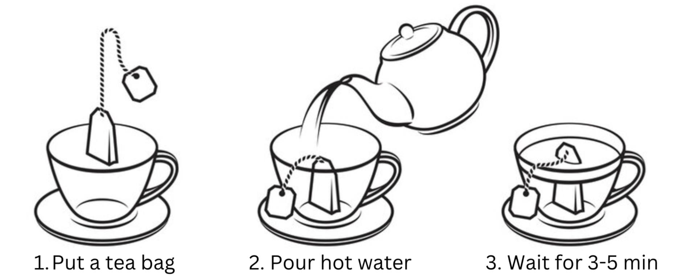

How to Make a Cup of Hot Tea
Tea is one of the most popular beverages in the world daily consumed by millions of people. In this article, we describe a quick way to make a cup of hot tea.
Tools and Ingredients
To make a cup of hot tea, you’ll need:
- Cup.
- Kettle.
- Tea. You can choose whatever type (green, black, etc.) and form (dried leaves or tea bags) you like.
- Sugar + teaspoon if you’d like to sweeten the taste.
- Milk or lemon if you’d like to add flavor.
Making Tea
To make a cup of tea:
- Pour clean cold water into a kettle. Make sure to pour enough water to fill a cup.
- Boil the water in the kettle. When water reaches the boiling temperature (around 100 °C):
- Modern electric kettles turn off automatically.
- Manual kettles whistle.
Safety first: If you feel that something’s wrong with the kettle — for example, it doesn’t turn on, keeps turning off, or makes smoke — turn off its power and contact the manufacturer or distributor.
- Put either a tea bag or tea leaves into a cup.
- Carefully pour the water from the kettle into the cup.
Tip: Leave 1cm till the edge of the cup to reduce the risk of spilling the water.
- If you’d like, add sugar, milk, or lemon into the cup.
- Let the tea rest for 3-5 minutes.
- Remove the tea bag from the cup and throw the bag into a trash can. If you used tea leaves, leave them in the cup.

What's Next?
Enjoy your tea! If you’re not completely satisfied with its taste:
- Try different tea until you find the taste that’s right for you.
- Add or remove extra ingredients, such as milk, sugar, lemon, or syrups.
- Keep a tea bag in a cup for more than 5 minutes.
- Try other recipes for making tea on our website.
Remember, tastes are individual, so feel free to experiment until you find tea that’ll be… well… your cup of tea.